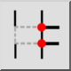
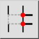
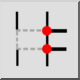
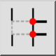

Salir del segmento a mano
Barra de herramienta / icono:
 

Menú: Modificar > Salir del segmento a mano
Acceso directo: B, 2
Comandos: brk | b2
Esta es una traducción automática.
Barra de herramienta / icono:
 

Menú: Modificar > Salir del segmento a mano
Acceso directo: B, 2
Comandos: brk | b2
Divide objetos cortando un segmento entre dos puntos definidos por el usuario.